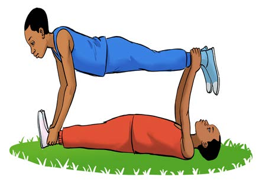
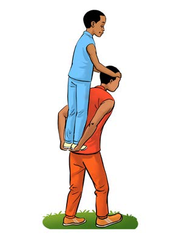
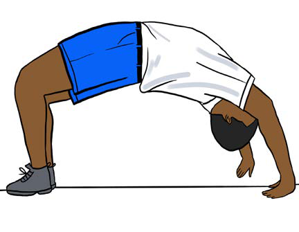
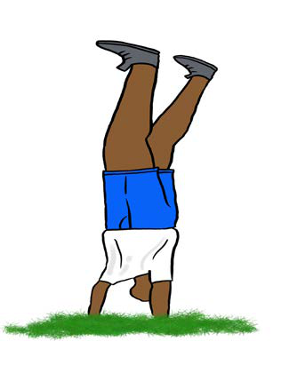

Circus
A circus is the act of people performing physical movements accompanied by music beats. It involves stretching, bending, jumping and walking rhythmically in different styles following the musical beats.
Study at the pictures and answer the following questions:



